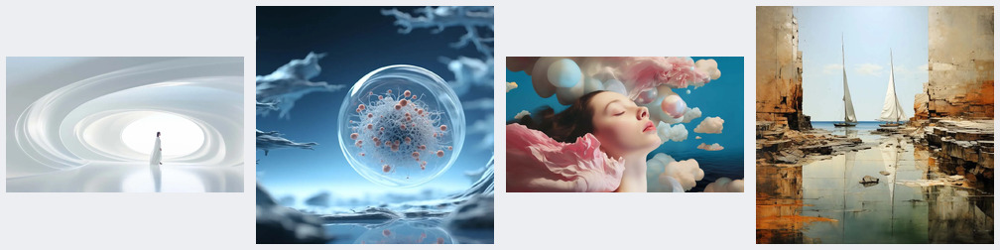
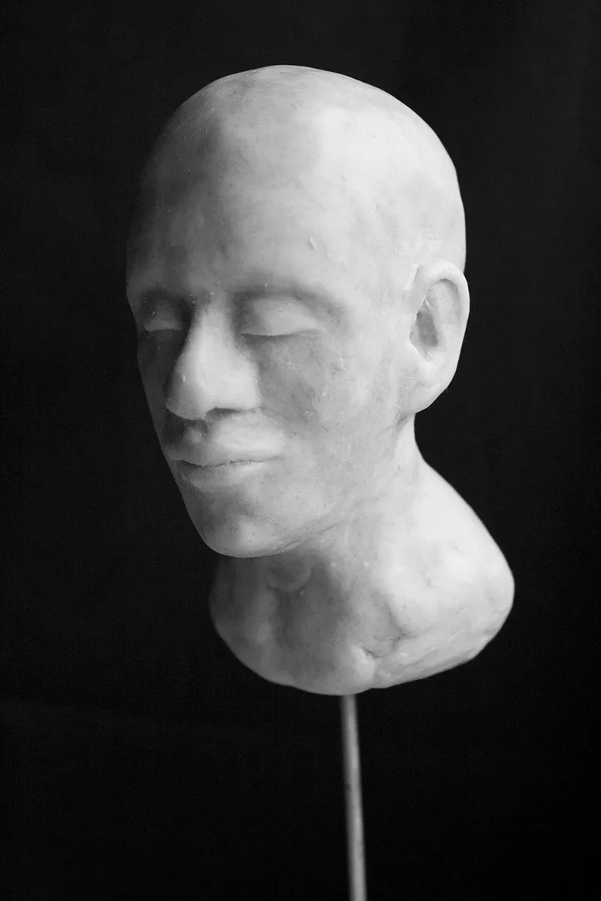
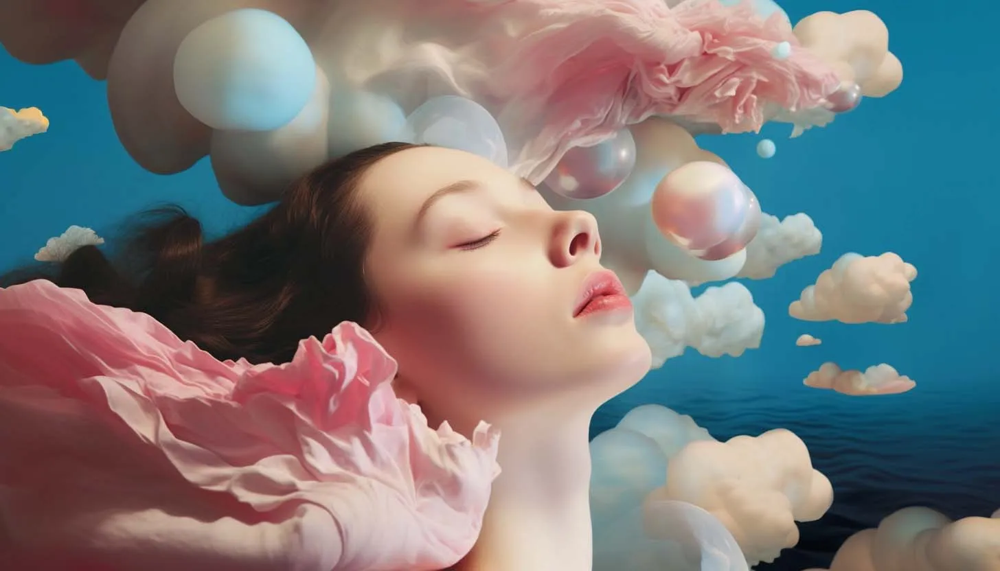
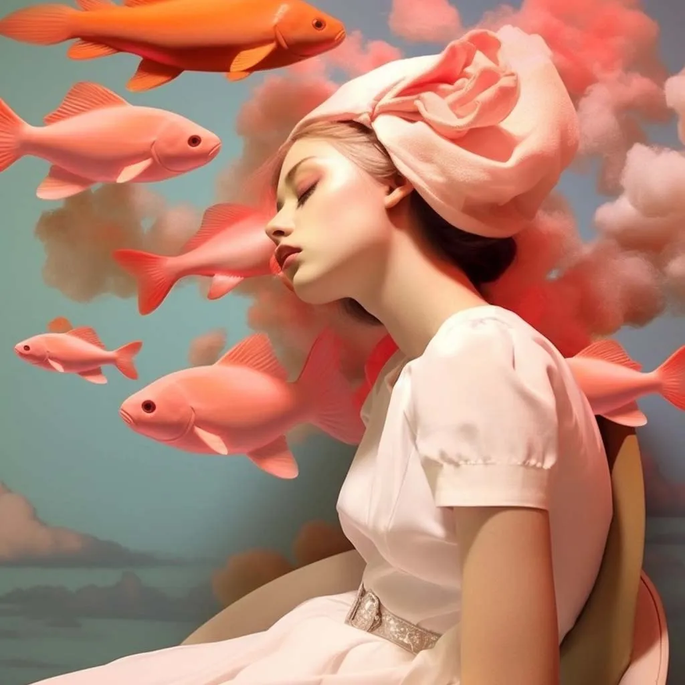
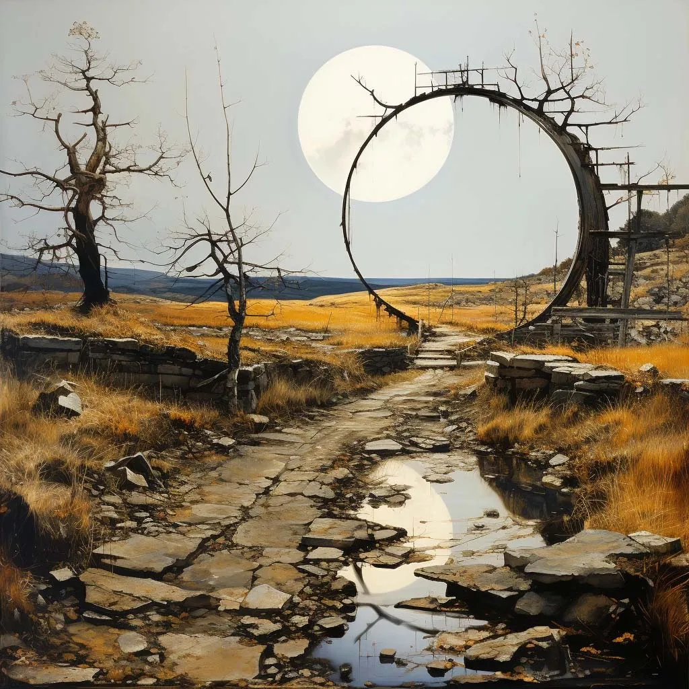
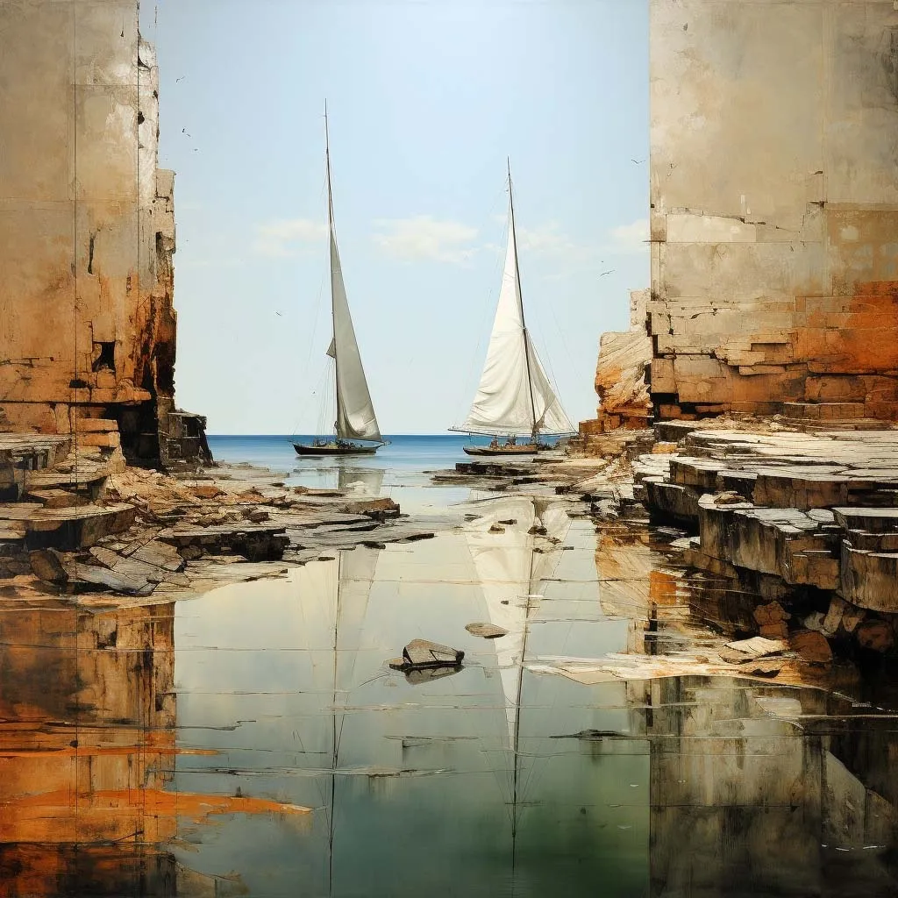
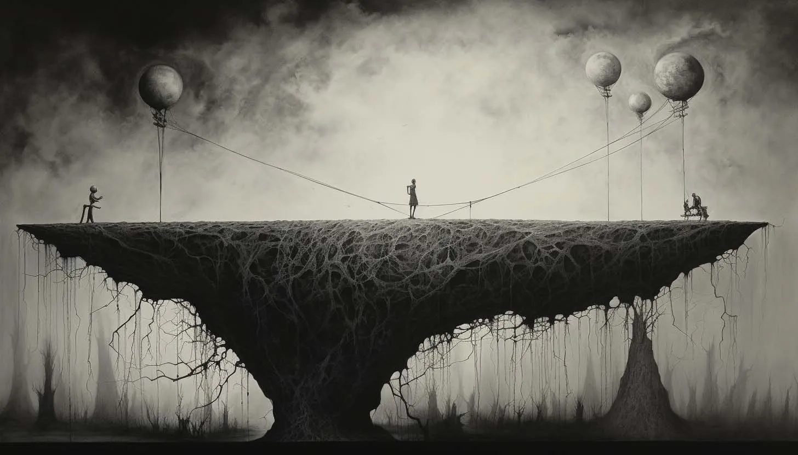
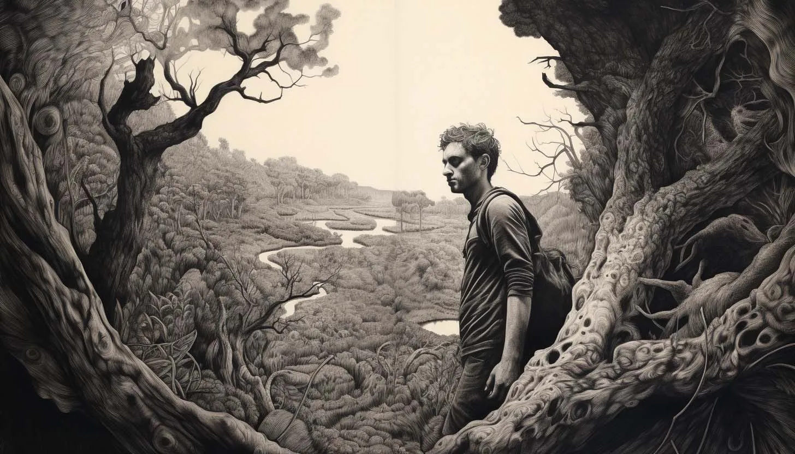

Before I touch charcoal or clay, I run a mood board for each material — fast generative passes to answer what should this feel like? not what is the final image? The boards set light, gesture, volume, palette, and motion grammar. The physical work proves or kills each direction.

Fine art — value, edge, gesture


Held: upper-left light, pinch read, charcoal value range. Let drift: background, skin texture. This board sat next to the easel while I drew.
Sculpture — volume, thumb-index meeting, scale



Held: palm-up pinch, meeting point as hero, hand scale not bust scale. Let drift: surface pitting, material finish. Killed the bust-scale instinct before I wasted clay.
Color — temperature, skin, atmosphere



Held: value structure from the charcoal keeper. Let drift: palette temperature, environmental colour. The board travels into 3D lighting and the final generative pass.
Motion — assemble, dissolve, return



Held: pinch silhouette readable through abstraction. Let drift: frame pacing, particle density. Storyboard grammar for the capstone edit before I opened the timeline.